Ver en acción
Ver en acciónEl Fino
07ESPUMA ROSA · 250 ML · Gamuza, nobuck y gorras.
Aroma · Corazón de Seda
¿Ya tienes tu producto? Empieza aquí.
El Fino · Gorras, gamuza, nobuck y tenis delicados · Aroma Corazón de Seda.
Sobre el cepillo seco.
Con movimientos en círculos.
Con microfibra seca.
FÓRMULA ORIGINAL · HECHO EN MÉXICO
Sin una gota de agua ni otros productos.
Fórmula original. Somos fabricantes. Hecho en México. El cuidado para cada material, con aromas que se quedan.
Ver en acciónESPUMA ROSA · 250 ML · Gamuza, nobuck y gorras.
Aroma · Corazón de Seda
 Ver en acción
Ver en acciónESPUMA VERDE · 250 ML · Blancos, piel, tela, malla y lona.
Aroma · Galán de Barrio
 Ver en acción
Ver en acciónPASTA AZUL · 250 G · Tapicería, vestiduras y suelas.
Pasta azul · 250 g
De la carta al resultado
Antes y después en tus fotografías reales. Sin retocar manchas, colores ni iluminación.
Ver todos los casos ↓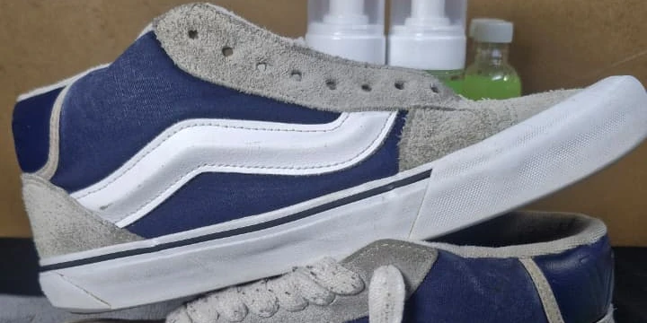
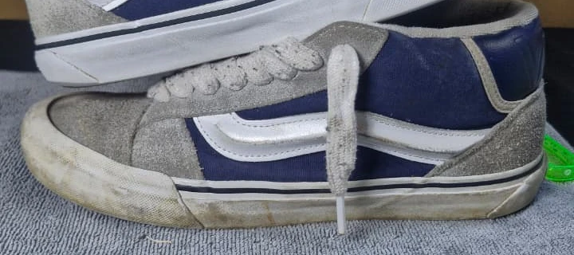
Dos zapatos del mismo par en una sola fotografía, con encuadres distintos. Abre el original para ver la comparación completa.
Ver original completo ↗TODO EN SECO ✦ SIN AGUA ✦ FÓRMULA ORIGINAL ✦ FABRICANTES MEXICANOS ✦ AROMAS QUE SE QUEDAN ✦
01 / El resultado se ve
Gorras, gamuza, tenis y tapicería. Mira el proceso completo en nuestros videos.


Misma silla, encuadres distintos. Fotografías originales del caso de tapicería.
Ver original completo ↗Mira cómo se hace
Tu gorra, paso a paso.
La gamuza pide un cuidado distinto.
Después del camino, el cuidado.
Mira el trabajo sobre la tapicería.
El proceso en un asiento de coche.
Así se trabaja en una lavandería.
Demostración en negocio
Aplicación, cepillado y comparación del resultado en tenis negros.
Lo quiero ↗Antes / Después · Toca una imagen para ampliarla.
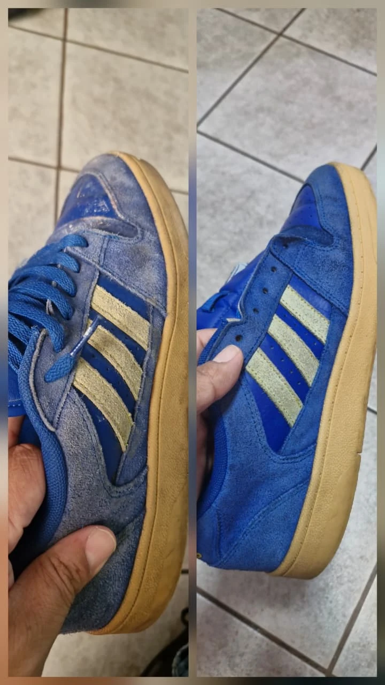
Antes / Después ↗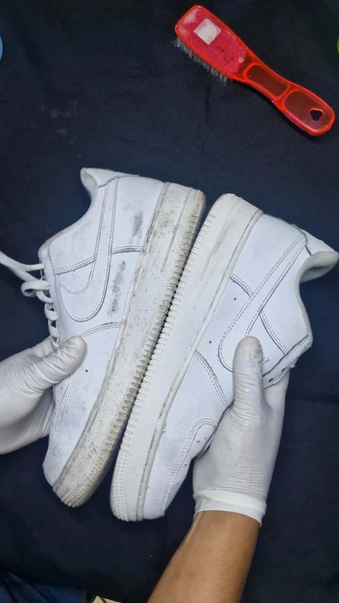
Antes / Después ↗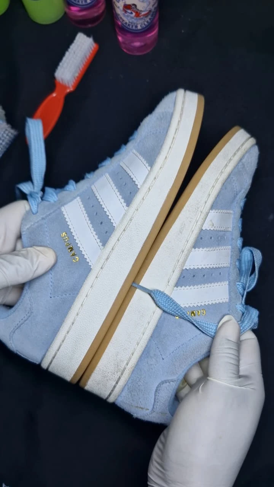
Antes / Después ↗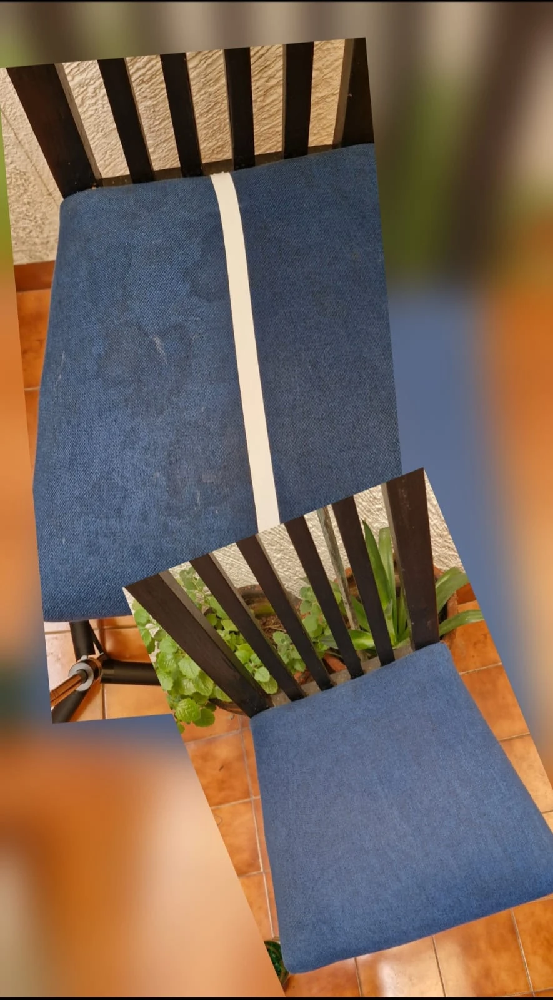
Antes / Después ↗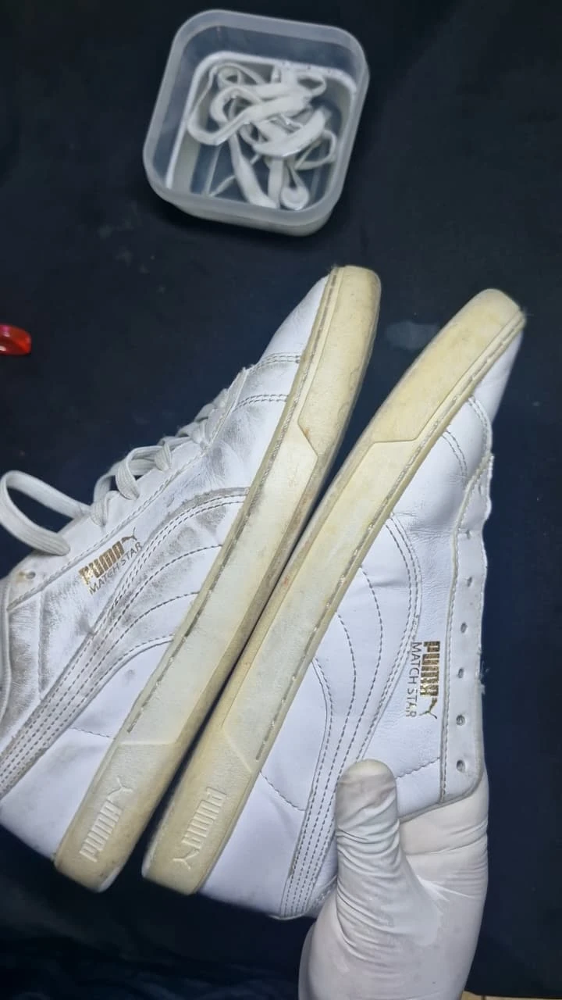
Antes / Después ↗ Antes / Después ↗
Antes / Después ↗ Antes / Después ↗
Antes / Después ↗Misma silla, encuadres distintos. Fotografías del caso original; el resultado depende del material, su estado y la suciedad.
Las cartas presentan la colección.
Los videos muestran el trabajo real.
De nuestra comunidad
Comentarios seleccionados de nuestro perfil, con enlace a su publicación original.
“recomendado, me funciona para mis gorras y mis tenis 🫵”
“recomiendo ampliamente🥰”
“recomendable limpia y fascina”
Opiniones individuales; los resultados dependen del material y su estado.
02 / La baraja para elegir
Elige tu kit por material. También puedes continuar con una recarga de tu producto.
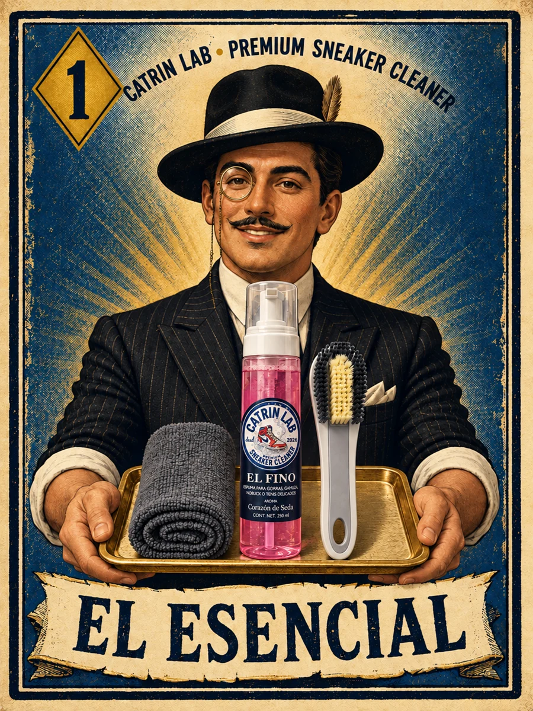
El Esencial · Fino El Fino + cepillo 2 en 1 + microfibra.Tres piezas: espuma rosa El Fino, un cepillo gris 2 en 1 y una microfibra.
Ver presentación ↗Comprar en TikTok Shop ↗Consultar por WhatsApp ↗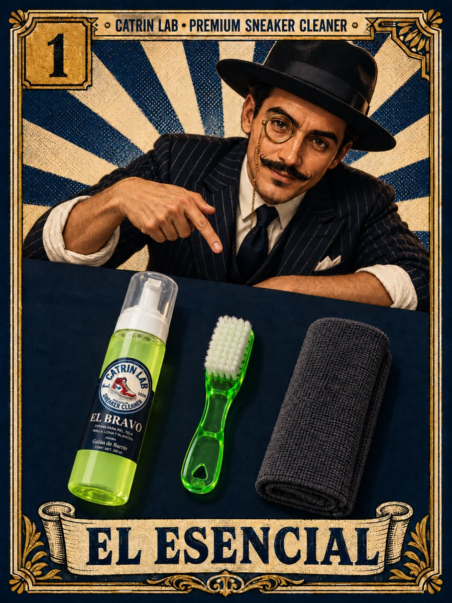
El Esencial · Bravo El Bravo + cepillo verde + microfibra.Tres piezas: espuma verde El Bravo, un cepillo verde y una microfibra.
Ver presentación ↗Comprar en TikTok Shop ↗Consultar por WhatsApp ↗ El Comprometido · Fino El Fino, su recarga y accesorios.
El Comprometido · Fino El Fino, su recarga y accesorios.El Fino 250 ml, refill rosa 250 ml, cepillo gris 2 en 1 y microfibra.
Ver presentación ↗Comprar en TikTok Shop ↗Consultar por WhatsApp ↗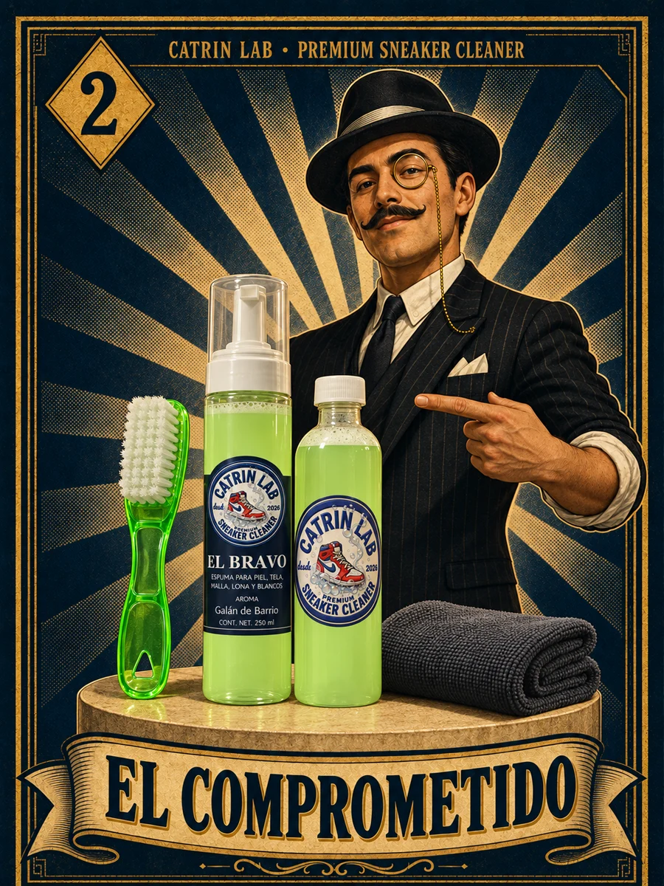
El Comprometido · Bravo El Bravo, su recarga y accesorios.El Bravo 250 ml, refill verde 250 ml, cepillo verde y microfibra.
Ver presentación ↗Comprar en TikTok Shop ↗Consultar por WhatsApp ↗ El Rompecorazones Dos espumas, pasta y accesorios.
El Rompecorazones Dos espumas, pasta y accesorios.Incluye las dos espumas, un tarro de El Milusos, dos cepillos y una microfibra.
Ver presentación ↗Comprar en TikTok Shop ↗Consultar por WhatsApp ↗ El Gran Catrín Dos espumas, dos recargas y accesorios.
El Gran Catrín Dos espumas, dos recargas y accesorios.Ocho piezas: El Fino, El Bravo, dos recargas, dos cepillos y dos microfibras.
Ver presentación ↗Comprar en TikTok Shop ↗Consultar por WhatsApp ↗ El Patrón Dos espumas, dos recargas, pasta y accesorios.
El Patrón Dos espumas, dos recargas, pasta y accesorios.Nueve piezas: El Fino, El Bravo, un refill rosa, un refill verde, El Milusos 250 g, dos cepillos y dos microfibras.
Ver presentación ↗Comprar en TikTok Shop ↗Consultar por WhatsApp ↗El Milusos · Kit Pasta 250 g + cepillo + microfibra.Incluye pasta El Milusos 250 g, un cepillo y una microfibra. No se recomienda para tenis nuevos ni delicados.
La fotografía muestra el producto. El kit también incluye cepillo y microfibra.
Ver presentación ↗Comprar en TikTok Shop ↗Consultar por WhatsApp ↗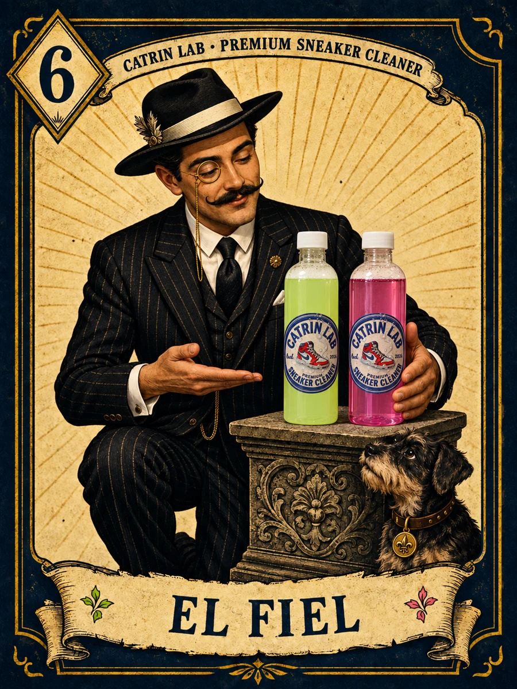
El Fiel Continúa con tu espuma favorita.Recarga de 250 ml: elige rosa para El Fino o verde para El Bravo. Se elige por separado.
Ver presentación ↗Comprar en TikTok Shop ↗Consultar por WhatsApp ↗El Gran Catrín y El Patrón incluyen dos microfibras. La recarga El Fiel se elige rosa o verde.
03 / Tu material manda
La gamuza no se trata igual que una malla. Elige tu material.
Si tus tenis combinan materiales, mándanos una foto por WhatsApp.
04 / El método
Sin añadir agua ni remojar. Prueba primero en una zona poco visible.
Aplica la espuma sobre el cepillo seco. Para El Milusos, toma poca pasta con el cepillo.
Talla suave, en círculos, sin mojar el cepillo.
Retira con microfibra seca. Deja secar a la sombra.
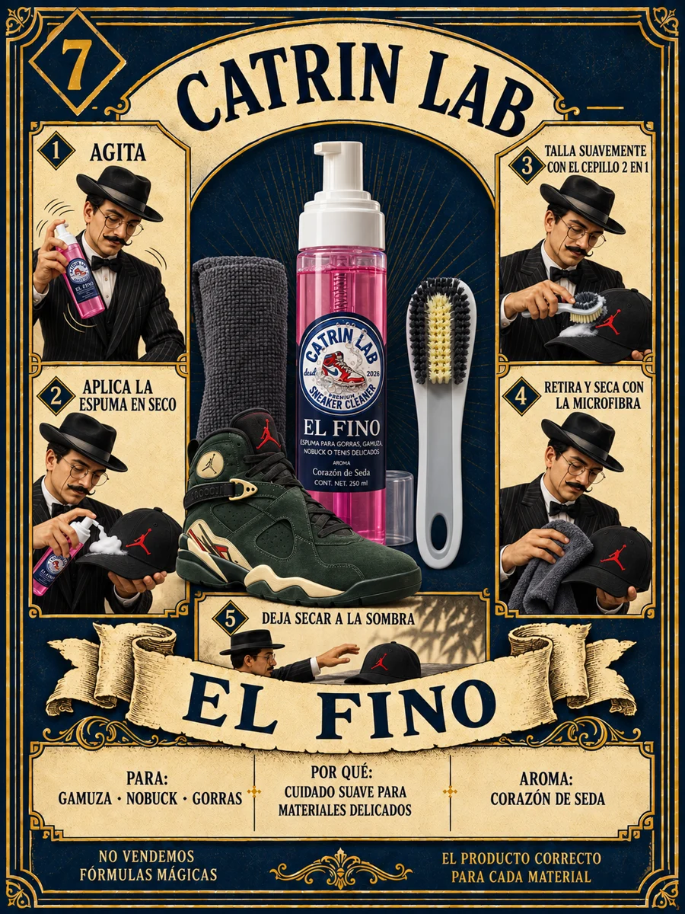
Guía ilustrada
Cepillo gris 2 en 1 para trabajar suavemente. Microfibra para retirar el producto.
Ver demostración real ▶Toca la imagen para ampliarla.
No es pintura ni tinte. La limpieza no corrige decoloración, roturas ni desgaste.
05 / Hablemos claro
No es pintura ni tinte. La limpieza retira mugre y polvo; no corrige un material decolorado.
Cada material lleva su producto: El Fino para gamuza, nobuck y gorras; El Bravo para piel, tela, malla y lona; El Milusos para tapicería, vestiduras y suelas.
Dependen del material, su estado y la suciedad. No todas las manchas salen. Prueba primero en una zona poco visible.
No se recomienda para tenis nuevos ni delicados. Elige primero por material.
Compra en nuestra tienda de TikTok Shop o escríbenos por WhatsApp para consultar entrega y envío.
Siete días naturales desde la entrega. Cubre bomba que no funciona, envase roto o derramado y piezas faltantes, con foto y video. No cubre mal uso, color de accesorios ni resultado del lavado.
Fórmula original · Hecho en México
¿Quieres distribuir Catrin Lab o consultar un proyecto de maquila? Cuéntanos qué necesitas.
Cuéntanos tu negocio y qué necesitas.
Consulta opciones, condiciones y disponibilidad.
Acuerda los detalles antes de comenzar.
Hablemos
Mándanos una foto de lo que quieres limpiar. Te orientamos por material.
Escribir por WhatsApp ↗